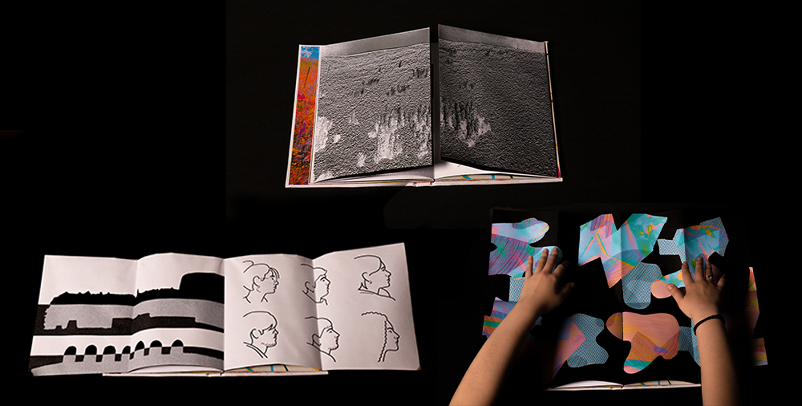
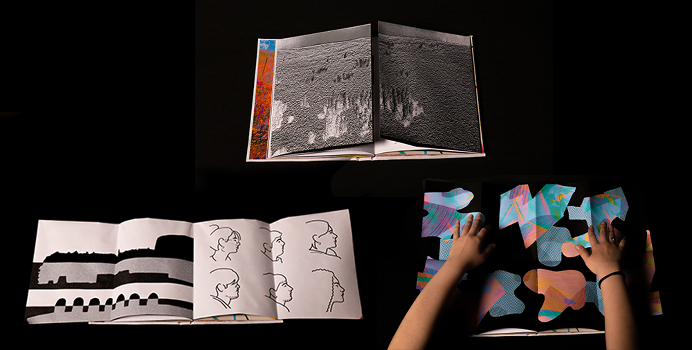

- Catalogue d'artiste
- Date : 12/2022 > 01/2023
- Domaine : Édition
Le catalogue d'artiste est un recueil, de plus de 80 pages, dans lequel on retrouve différents projets que j'ai réalisés. Ces projets sont réinterprétés, agencés de manière à créer des liens entre ces derniers. Pour ce catalogue, initialement en A5, j'ai créé au sein de ce dernier un dépliant A2 recto-verso. La couverture de ce catalogue est cartonnée et j'ai relié l’ensemble avec une reliure copte.
 
